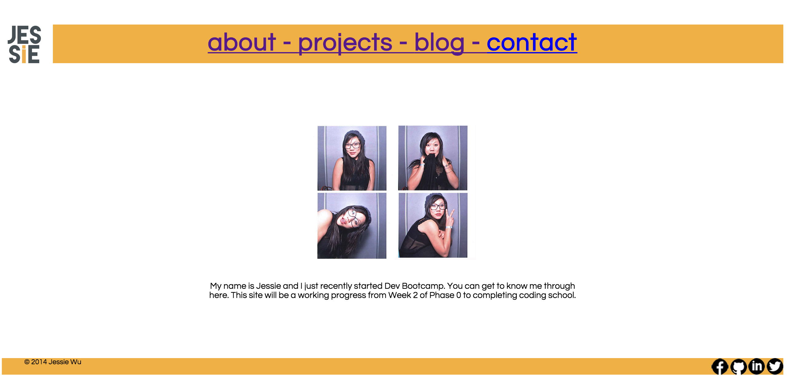

For Week 9, we were assigned to revisit our site and modify it. I decided to completely redo my github.io with a new look with solely HTML & CSS. I wanted to go with a flat design since that's the current rage and in my opinion, the simplest design to do.
I love design and because it is my own website that represents me, there is a huge incentive to do well. Time flies and it's hard to timebox myself because everything has to look just right.
Sometimes things just don't flow and it's hard to figure out what is missing. Originally I thought my design was a little empty, which is really easy to get since flat design is so minimal.
I asked several people whose design and style preferences were similar to mine. Someone suggested moving the navigation bar after my animated dots gif banner to make it look more cohesive. He also recommended I add a light shadow to some of the text so that it'd look less empty. I took both into consideration and implemented them, but one thing I still need to work on is the color scheme. He felt like the colors needed to contrast more from each other, which I agree but I've scoured colourlovers.com and design-seeds.com for a good color palette and nothing has really stuck with me. I'll figure it out later in due time.
Another feedback I got was that whenever the window is resized, all the content gets messed up. This is something I've had a problem with since day one. I am not sure if it is related to responsive design, but I haven't taken the time to figure it out yet unfortunately. I feel like I need more time to research on this problem.
I am also stuck on making my links in the navigation bar fit inside. It's so weird because the code worked fine for my old version but it wouldn't work this time. Even worse is a fellow squirrel played around with the dev tools and made it all work but then when I tried to copy the CSS from his dev tool screenshots, it wouldn't work! At this point I have spent so much time on my website that I'm just going to deal with it later.
One thing I would do differently is taking the time to look into Bootstrap, jQuery, and other things. They do wonderful things with less time in coding, after you've learned how to use them at least.